Esta página brinda información clara sobre salud física, emocional y hábitos en la adolescencia.
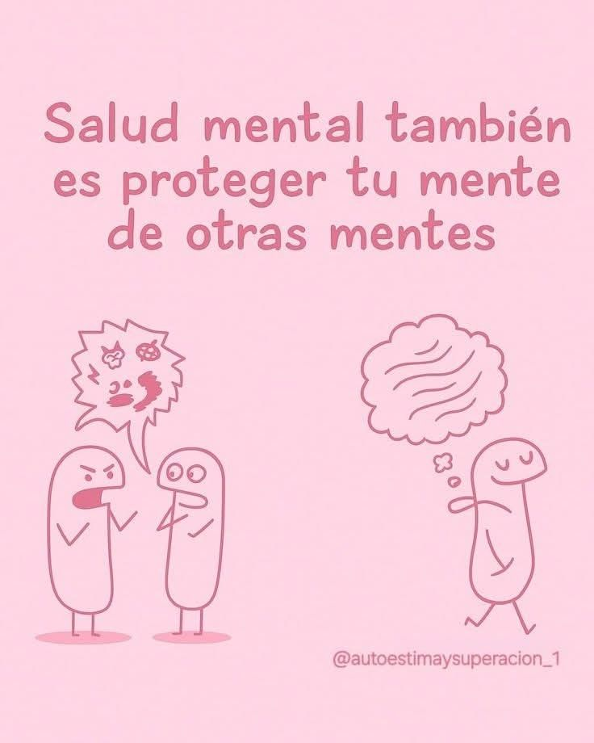
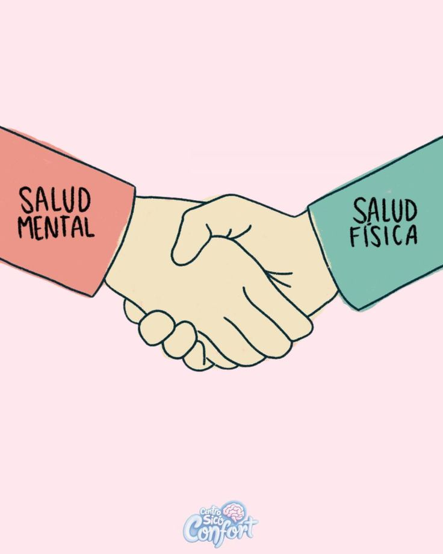
La gestión emocional es la capacidad de reconocer, comprender y manejar nuestras emociones de manera adecuada. Durante la adolescencia experimentamos sentimientos como alegría, tristeza, enojo, miedo, frustración y preocupación.
Nos ayuda a cuidar nuestra salud mental, mejorar nuestras relaciones personales, afrontar situaciones difíciles y tomar decisiones responsables.
Recuerda: Todas las emociones son válidas. Lo importante es aprender a expresarlas y manejarlas de forma saludable.
La presión social ocurre cuando una persona siente que debe actuar, pensar o comportarse de determinada manera para ser aceptada por sus amigos o por un grupo. Durante la adolescencia puede influir en nuestra forma de vestir, hablar y tomar decisiones.
Nos permite desarrollar nuestra autonomía, fortalecer nuestra personalidad y tomar decisiones responsables sin dejarnos llevar por influencias negativas.
Recuerda: No necesitas hacer lo que otros hacen para ser aceptado. Tus decisiones merecen respeto.
La autoestima es la valoración, el respeto y la aceptación que tenemos hacia nosotros mismos. Durante la adolescencia puede verse influida por los comentarios de otras personas, las comparaciones, las redes sociales y los cambios físicos y emocionales.
Una autoestima saludable favorece la confianza, la seguridad personal, la autonomía y una relación positiva con nosotros mismos.
Recuerda: Tu valor no depende de las opiniones de los demás. Aprende a reconocer y valorar quién eres.
Las relaciones saludables se construyen mediante el respeto, la confianza, la comunicación y la comprensión. Pueden darse entre amigos, familiares, compañeros y parejas.
Nos ayudan a mantener nuestro bienestar emocional, sentirnos respetados, desarrollar confianza y construir vínculos positivos con las personas que nos rodean.
Recuerda: Una relación saludable nunca debe basarse en el miedo, el control o la falta de respeto.
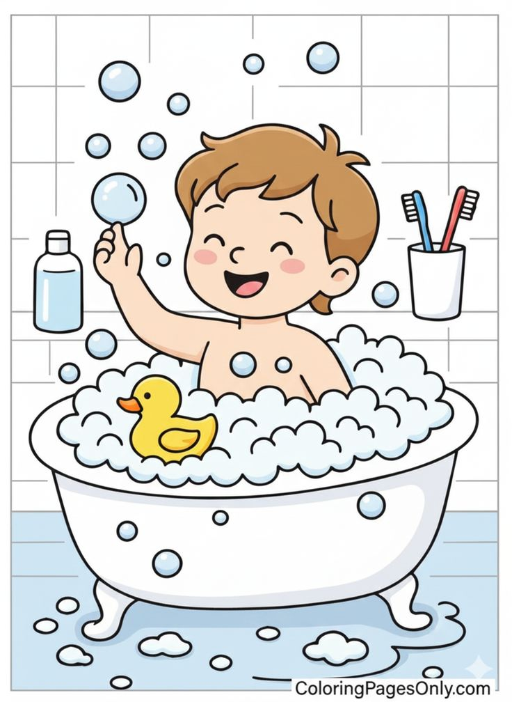
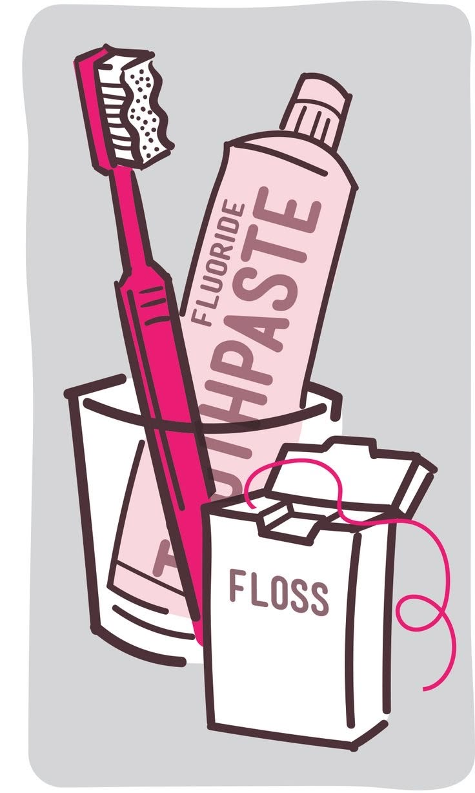
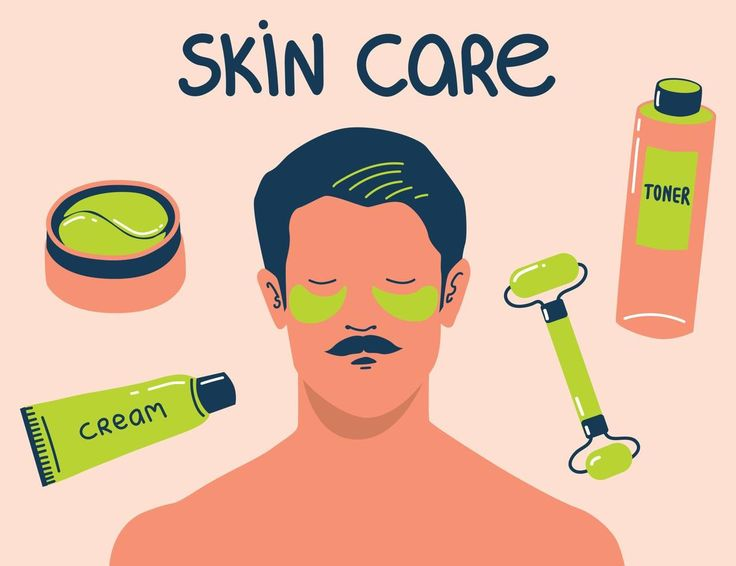
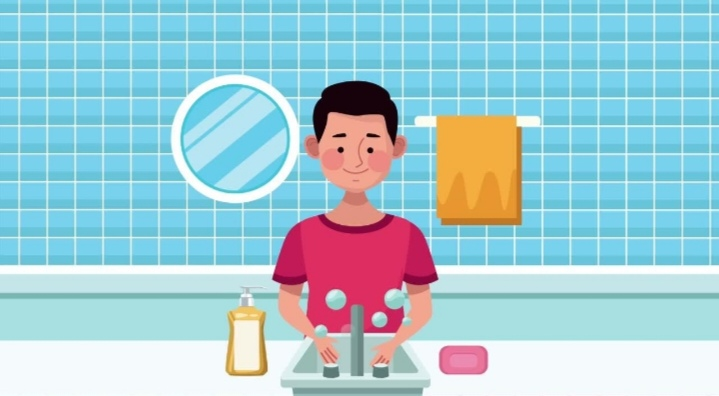
La higiene personal comprende los hábitos diarios que permiten mantener nuestro cuerpo limpio y saludable. Durante la adolescencia, los cambios hormonales pueden aumentar la sudoración y la producción de grasa en la piel, por eso es importante mantener una buena higiene.
Mantener una buena higiene ayuda a prevenir infecciones, malos olores, acumulación de suciedad e irritaciones, además de favorecer el bienestar y la salud personal.
Recuerda: La higiene personal es un hábito diario que demuestra respeto y cuidado hacia nuestro propio cuerpo.
La piel es el órgano que protege nuestro cuerpo frente a factores externos. Durante la adolescencia, los cambios hormonales pueden aumentar la producción de grasa, provocando acné, puntos negros y otras alteraciones.
El cuidado de la piel ayuda a conservar su función protectora, prevenir irritaciones y mantener una limpieza adecuada.
Recuerda: Cada persona tiene un tipo de piel diferente, por eso debemos utilizar productos adecuados y evitar tratamientos sin orientación.
El cabello también necesita atención e higiene. Durante la adolescencia, los cambios hormonales pueden aumentar la producción de grasa en el cuero cabelludo y favorecer la aparición de caspa.
Una buena higiene capilar ayuda a mantener limpio el cuero cabelludo, reducir la acumulación de grasa y prevenir algunas molestias como la irritación y la caspa.
Recuerda: El cuidado del cabello no depende de su longitud o apariencia, sino de mantenerlo limpio y saludable.
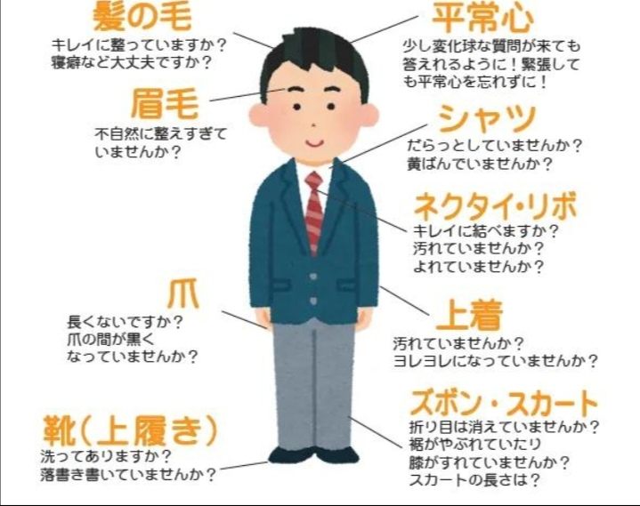
La presentación personal está relacionada con los hábitos de limpieza, orden y cuidado que reflejamos en nuestra vida cotidiana. No significa utilizar ropa costosa ni cumplir con un modelo de apariencia, sino mantener una imagen limpia y adecuada para cada situación.
Una presentación personal adecuada fortalece los hábitos de responsabilidad, limpieza y respeto hacia nosotros mismos y las personas que nos rodean.
Recuerda: La presentación personal comienza con el cuidado de uno mismo, no con la comparación con otras personas.
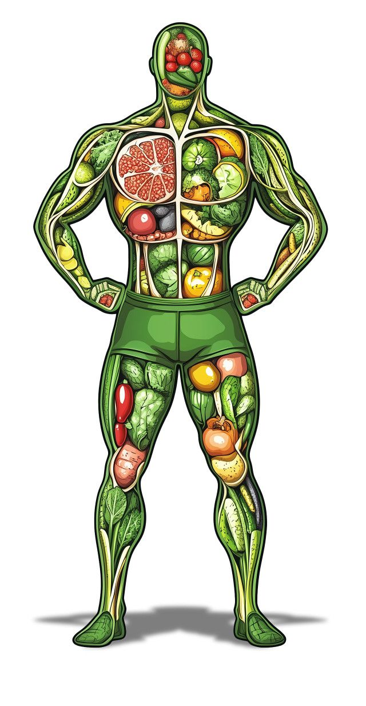
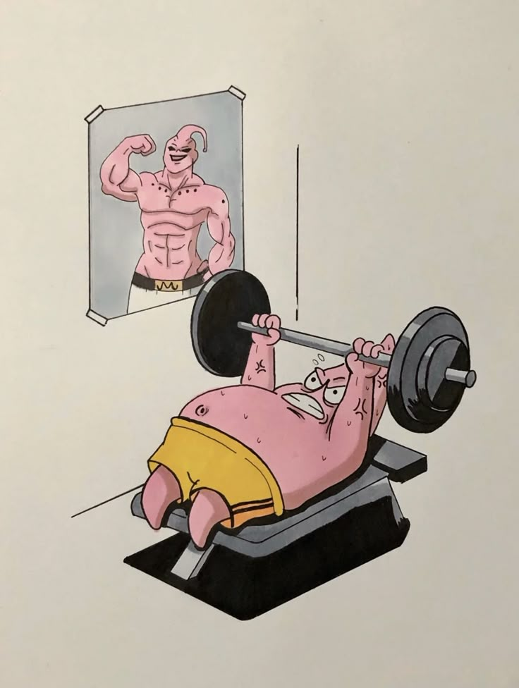
La alimentación saludable es fundamental durante la adolescencia, porque en esta etapa el cuerpo continúa creciendo y desarrollándose. Los alimentos proporcionan la energía y los nutrientes necesarios para fortalecer los músculos, los huesos, el cerebro y el sistema inmunológico. Una buena alimentación también favorece la concentración, el aprendizaje y el bienestar general.
Una alimentación adecuada favorece el crecimiento, fortalece los huesos y músculos, contribuye al funcionamiento del cerebro y proporciona energía para estudiar, practicar deportes y realizar las actividades cotidianas. También ayuda a mantener un buen funcionamiento del sistema inmunológico.
Cuando la alimentación no proporciona los nutrientes necesarios, pueden presentarse cansancio, dificultades de concentración, debilidad y problemas relacionados con el desarrollo. Por eso, es importante mantener hábitos alimenticios variados y equilibrados.
Recuerda: Alimentarse saludablemente no significa dejar de comer ni seguir dietas estrictas. Significa proporcionar al cuerpo los nutrientes que necesita para crecer y mantenerse saludable.
La actividad física comprende todos los movimientos del cuerpo que requieren gasto de energía. Incluye caminar, correr, bailar, andar en bicicleta, practicar deportes y realizar juegos recreativos. Durante la adolescencia, mantenerse activo contribuye al desarrollo de los músculos, los huesos, el corazón y los pulmones.
La Organización Mundial de la Salud recomienda que los niños, niñas y adolescentes de 5 a 17 años realicen un promedio de 60 minutos diarios de actividad física de intensidad moderada a vigorosa a lo largo de la semana. También recomienda incorporar actividades que fortalezcan los músculos y los huesos al menos tres días por semana.
La actividad física no solamente beneficia al cuerpo, también favorece la salud mental y las relaciones sociales. Practicar deportes o realizar actividades recreativas permite compartir experiencias, desarrollar disciplina, fortalecer la confianza y aprender a trabajar en equipo.
Recuerda: No es necesario practicar un deporte profesional para mantenerse saludable. Caminar, bailar, jugar y moverse diariamente también son formas de cuidar nuestro cuerpo.
El descanso y el sueño son necesidades fundamentales para el funcionamiento del organismo. Mientras dormimos, el cuerpo realiza procesos de recuperación, crecimiento y regulación. Además, el cerebro organiza la información aprendida durante el día, lo que favorece la memoria y la concentración.
Las necesidades de sueño cambian según la edad. Los adolescentes de 13 a 17 años necesitan generalmente entre 8 y 10 horas de sueño cada noche. A partir de los 18 años, la recomendación habitual para los adultos es dormir entre 7 y 9 horas.
La falta de sueño puede provocar cansancio, irritabilidad, dificultades para concentrarse, problemas de memoria y menor rendimiento académico. Cuando se convierte en un hábito, también puede afectar el bienestar físico y emocional.
Durante la adolescencia se producen importantes cambios físicos, mentales y emocionales. Por esta razón, dormir lo suficiente permite que el organismo se recupere, que el cerebro procese nuevos conocimientos y que podamos afrontar mejor las actividades de cada día.
Recuerda: Dormir bien no es perder el tiempo. Es una parte esencial del cuidado de nuestra salud.
Es el hábito de limpieza específica de los órganos genitales para prevenir infecciones, irritaciones y malos olores. Es una parte fundamental del autoconocimiento y el respeto por el propio cuerpo. Después de sudar haciendo deporte, la humedad en la zona genital aumenta el riesgo de bacterias. Es el momento más importante para una ducha y cambio de ropa.
La gestión emocional es la capacidad de reconocer, comprender y expresar nuestras emociones de manera saludable. Durante la adolescencia podemos experimentar diferentes sentimientos debido a los cambios personales, familiares, sociales y escolares. Sentir alegría, tristeza, miedo, enojo, preocupación o frustración forma parte de la experiencia humana.
Identificar lo que sentimos nos permite comprender mejor nuestras reacciones, comunicar nuestras necesidades y afrontar situaciones difíciles. No existen emociones buenas o malas; lo importante es aprender a expresarlas sin lastimarnos ni lastimar a otras personas.
Las preocupaciones escolares, los conflictos familiares, la presión de otras personas, los cambios propios de la adolescencia y la falta de descanso pueden influir en nuestro estado emocional. Por eso, es importante aprender a reconocer cuándo necesitamos una pausa o el acompañamiento de alguien.
Recuerda: Está bien no sentirse bien todos los días. Reconocer tus emociones también es una forma de cuidarte.
La autoestima es la valoración y el respeto que una persona desarrolla hacia sí misma. Incluye reconocer nuestras cualidades, aceptar que tenemos dificultades y comprender que nuestro valor no depende de la opinión de otras personas ni de cumplir con determinados modelos de apariencia.
Durante la adolescencia, la autoestima puede verse influida por los cambios físicos y emocionales, las amistades, los comentarios de otras personas, el entorno familiar y las experiencias escolares. Cada persona desarrolla su confianza y su identidad a su propio ritmo.
Las críticas constantes, las burlas, el rechazo, la discriminación, las comparaciones y la presión por cumplir expectativas ajenas pueden afectar la manera en que nos valoramos. Es importante recordar que los comentarios negativos no determinan quiénes somos.
Una autoestima saludable favorece la seguridad personal, la autonomía y la capacidad de tomar decisiones. También nos ayuda a reconocer nuestros derechos, expresar lo que pensamos y construir relaciones basadas en el respeto.
Recuerda: No necesitas ser perfecta para reconocer tu valor. Mereces respeto, empezando por ti misma.
Las redes sociales son plataformas digitales que permiten comunicarnos, compartir experiencias, aprender y conocer diferentes contenidos. Durante la adolescencia forman parte de la vida cotidiana, pero es importante aprender a utilizarlas de manera consciente y equilibrada.
Las redes sociales pueden tener efectos positivos y también presentar algunas dificultades. Permiten mantener contacto con amistades, encontrar información y expresar intereses. Sin embargo, las comparaciones, los comentarios ofensivos, la presión por recibir aprobación y algunos contenidos pueden generar preocupación o afectar el estado de ánimo.
Es cuando comparamos nuestra apariencia, experiencias, logros o forma de vivir con lo que otras personas publican en internet. Debemos comprender que las publicaciones no muestran necesariamente toda la realidad de una persona y que cada adolescente tiene su propio proceso de crecimiento.
Recuerda: Tu valor no se mide por la cantidad de seguidores, comentarios o reacciones que recibes. Las redes sociales deben ser una herramienta, no una medida de tu importancia como persona.
El apoyo emocional consiste en recibir comprensión, respeto, escucha y acompañamiento cuando atravesamos situaciones que nos generan preocupación, tristeza, estrés o dificultad. Todas las personas podemos necesitar apoyo en algún momento de nuestra vida, y pedirlo no significa ser débil.
Podemos buscar acompañamiento cuando una preocupación se vuelve difícil de manejar, cuando los problemas afectan nuestras actividades diarias o cuando sentimos que no podemos afrontar una situación por nuestra cuenta.
Contar con personas que nos escuchen y acompañen favorece el bienestar emocional, fortalece los vínculos de confianza y ayuda a afrontar las dificultades. Un entorno familiar, escolar y social respetuoso puede convertirse en una fuente importante de protección durante la adolescencia.
Recuerda: Pedir ayuda es una decisión valiente. No tienes que enfrentar todas las dificultades por tu cuenta.
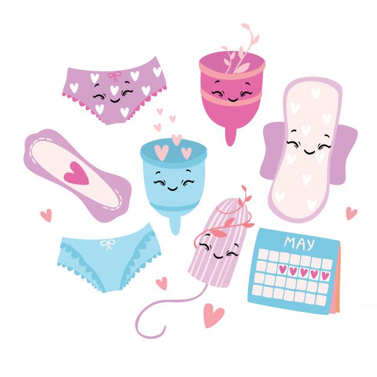
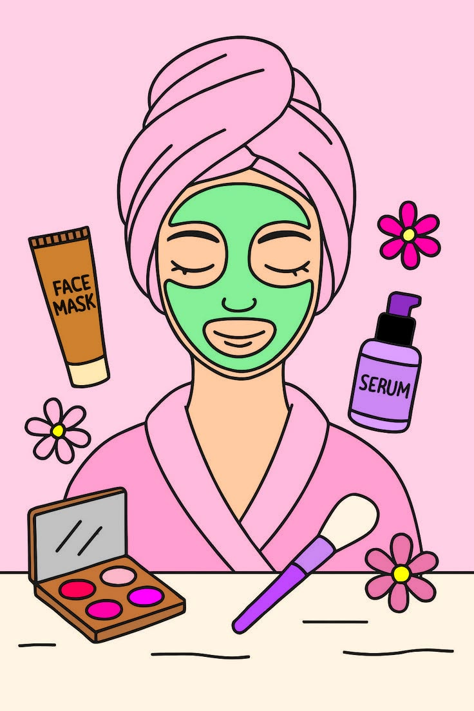
Tu piel te acompaña todos los días y cumple una función esencial: proteger tu cuerpo de factores externos como el sol, el polvo, la contaminación y algunos microorganismos. Por eso, cuidarla no significa buscar una piel perfecta, sino mantenerla limpia, protegida y saludable.
Durante la adolescencia, los cambios hormonales pueden aumentar la producción de grasa en la piel. Esto puede provocar brillo, puntos negros, granitos o acné. Son cambios frecuentes en esta etapa y no significan que estés haciendo algo mal ni que tu piel esté sucia.
No necesitas utilizar muchos productos para cuidar tu rostro. Una limpieza suave por la mañana y por la noche ayuda a retirar el sudor, la grasa y las impurezas acumuladas durante el día. Después puedes utilizar una crema hidratante adecuada para tu tipo de piel y, durante el día, protector solar.
El protector solar es especialmente importante porque ayuda a proteger la piel de los daños ocasionados por la radiación ultravioleta. Es recomendable utilizarlo incluso cuando el cielo está nublado y renovarlo según las indicaciones del producto, especialmente después de sudar o permanecer al aire libre.
Cada piel es diferente. Algunas son secas, otras grasas y otras presentan características mixtas o sensibilidad. Por eso, es importante elegir productos suaves, evitar mezclar demasiados tratamientos y no apretar los granitos, ya que esto puede provocar irritación y dejar marcas.
Si tienes acné intenso, irritación persistente o molestias, consultar con un profesional de salud puede ayudarte a encontrar el cuidado adecuado.
Un consejo para ti: Tu piel no necesita ser perfecta para estar saludable. Trátala con paciencia, protégela del sol y recuerda que cuidarte es una forma de respetarte.
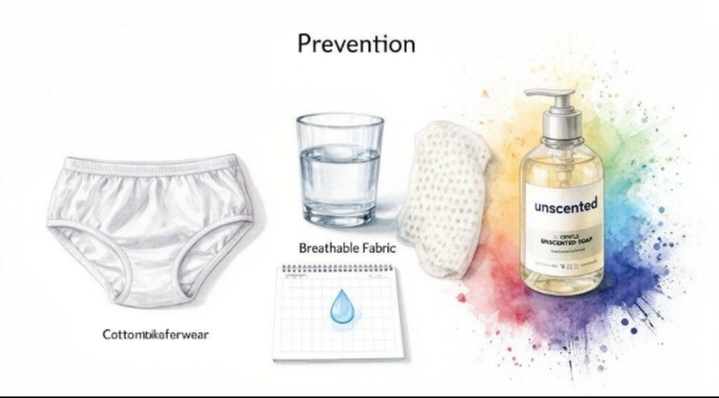
Conocer y cuidar nuestra zona íntima es una parte importante de la salud femenina. Durante la adolescencia, el cuerpo experimenta cambios naturales y aprender a mantener una higiene adecuada permite sentirnos cómodas, prevenir irritaciones y reconocer cuándo algo necesita atención.
Es importante conocer la diferencia entre la vulva y la vagina. La vulva es la parte externa de los genitales femeninos, mientras que la vagina es el conducto interno que comunica el útero con el exterior. Esta diferencia nos ayuda a comprender que no todas las partes necesitan los mismos cuidados.
Para mantener una higiene adecuada, basta con lavar suavemente la parte externa con agua limpia. Si utilizas jabón, procura que sea suave y sin perfume. Después, seca la zona con cuidado, sin frotar. También es recomendable utilizar ropa interior limpia, cambiarla diariamente y elegir prendas cómodas.
Al utilizar el baño, limpiarse de adelante hacia atrás ayuda a evitar que microorganismos de la zona anal lleguen a la entrada vaginal o a las vías urinarias. Asimismo, lavarse las manos antes y después de manipular productos de higiene personal es un hábito sencillo y necesario.
El flujo vaginal es una secreción natural que ayuda a mantener la vagina limpia y protegida. Generalmente puede ser transparente o blanquecino, y su cantidad y consistencia pueden cambiar durante el ciclo menstrual. Su presencia, por sí sola, no significa que exista una infección.
Sin embargo, si notas picazón persistente, ardor, dolor, olor fuerte o cambios importantes en el flujo, es recomendable acudir a un profesional de salud. No es aconsejable utilizar perfumes íntimos, duchas vaginales ni productos irritantes, porque pueden alterar el equilibrio natural de la zona.
Un consejo para ti: Tu cuerpo tiene mecanismos naturales de protección. No necesitas ocultar ni avergonzarte de sus cambios. Conocerlo y cuidarlo es parte de tu bienestar.
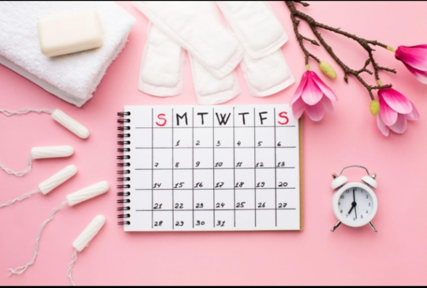
La menstruación es un proceso natural que forma parte del desarrollo del cuerpo femenino. Ocurre cuando el revestimiento interno del útero se desprende y sale a través de la vagina en forma de sangrado. Aunque todavía existen muchos mitos y vergüenza alrededor de este tema, conocer la menstruación permite vivirla con mayor tranquilidad y seguridad.
El ciclo menstrual está regulado por cambios hormonales. Durante este proceso, el organismo se prepara para un posible embarazo. Si este no ocurre, el revestimiento del útero se desprende y comienza un nuevo periodo menstrual. Cada cuerpo tiene su propio ritmo y los ciclos pueden variar, especialmente durante los primeros años después de la primera menstruación.
Registrar las fechas de inicio de la menstruación puede ayudarte a conocer mejor tu ciclo y reconocer tus cambios habituales. Algunas adolescentes pueden experimentar cólicos, cansancio, sensibilidad en los senos, hinchazón o variaciones en el estado de ánimo. Estos síntomas no son iguales para todas las personas.
Durante el periodo es importante mantener una higiene adecuada y utilizar productos menstruales limpios, como toallas higiénicas, tampones o copas menstruales, según las preferencias y necesidades de cada persona. Estos productos deben utilizarse y cambiarse siguiendo las indicaciones correspondientes.
También es recomendable lavarse las manos antes y después de cambiar los productos, limpiar suavemente la zona externa y desechar las toallas utilizadas en un basurero. No es necesario dejar de estudiar, caminar o realizar actividades cotidianas por estar menstruando, siempre que te sientas cómoda.
Para aliviar los cólicos puede ayudar aplicar calor suave en la parte baja del abdomen, descansar y realizar movimientos ligeros si te resultan cómodos. Sin embargo, si el dolor es muy intenso, el sangrado es excesivo o aparecen mareos y debilidad, es importante buscar orientación médica.
Un consejo para ti: La menstruación no es algo de lo que debas avergonzarte. Es parte de la salud y merece información, comprensión y respeto. Conocer tu ciclo también es aprender a escuchar tu cuerpo.
El autocuidado es mucho más que mantener una buena apariencia o cumplir con una rutina de higiene. Es aprender a reconocer nuestras necesidades y realizar pequeñas acciones que favorezcan nuestra salud física, mental y emocional.
Durante la adolescencia, las responsabilidades escolares, las amistades, los cambios personales y las preocupaciones pueden hacer que olvidemos dedicar tiempo a nuestro bienestar. Por eso, es importante comprender que cuidarnos también significa descansar, poner límites y permitirnos pedir ayuda.
Mantener una alimentación variada, beber suficiente agua, realizar actividad física, descansar adecuadamente y cuidar nuestra higiene son hábitos que contribuyen al funcionamiento saludable del organismo. No se trata de hacerlo todo perfectamente, sino de construir hábitos que podamos mantener.
Dedicar tiempo a las actividades que disfrutamos, expresar nuestros sentimientos, conversar con personas de confianza y reconocer cuándo necesitamos descansar son formas de autocuidado emocional. No debemos sentirnos obligadas a estar felices todo el tiempo ni a resolver todas las dificultades por nuestra cuenta.
Cuidarnos también significa reconocer aquello que nos hace sentir incómodas, aprender a decir no y tomar decisiones respetando nuestros valores. Nadie debe presionarnos para realizar algo que no queremos. Nuestro cuerpo, nuestras emociones y nuestras decisiones merecen respeto.
Si una situación nos preocupa, nos causa malestar o afecta nuestras actividades diarias, podemos hablar con una persona adulta de confianza o buscar orientación profesional. Pedir apoyo no es una señal de debilidad, sino una manera responsable de proteger nuestro bienestar.
Un consejo para ti: No tienes que esperar a sentirte mal para empezar a cuidarte. Dedicarte tiempo, escucharte y respetarte también son formas de demostrarte cariño.
El ejercicio físico es una actividad que permite mantener el cuerpo en movimiento y fortalecer diferentes partes del organismo. No se trata solamente de practicar un deporte, también incluye caminar, bailar, andar en bicicleta, correr, jugar o realizar actividades recreativas.
Durante la adolescencia, mantenerse activo es especialmente importante porque el cuerpo se encuentra en una etapa de crecimiento y desarrollo. La actividad física ayuda a fortalecer los músculos y los huesos, mejora la resistencia, favorece el funcionamiento del corazón y contribuye al bienestar emocional.
Para niñas, niños y adolescentes de 5 a 17 años, se recomienda realizar un promedio de 60 minutos diarios de actividad física moderada o intensa a lo largo de la semana. No es necesario hacer todo el ejercicio de una sola vez; se puede distribuir durante el día.
Elige actividades que disfrutes, comienza de manera progresiva, utiliza ropa cómoda y recuerda mantenerte hidratado. También es importante respetar los momentos de descanso y no exigirte más de lo que tu cuerpo puede realizar.
Un consejo para ti: cada movimiento cuenta. Encuentra una actividad que te guste y conviértela en parte de tu vida cotidiana.
La alimentación saludable consiste en proporcionar al organismo los alimentos y nutrientes que necesita para obtener energía, crecer, desarrollarse y realizar sus actividades diarias. Una buena alimentación no significa dejar de comer determinados alimentos, sino aprender a mantener variedad y equilibrio.
Durante la adolescencia, el cuerpo atraviesa diferentes cambios y necesita energía y nutrientes para acompañar su crecimiento. Por eso, es importante incluir frutas, verduras, cereales, legumbres, lácteos y alimentos que aporten proteínas.
Las calorías son unidades que permiten medir la energía que proporcionan los alimentos y las bebidas. El organismo utiliza esa energía para respirar, caminar, estudiar, pensar, mantener sus funciones internas y realizar actividad física.
Las calorías no son algo malo: el cuerpo las necesita para funcionar correctamente. La cantidad de energía que necesita cada persona es diferente y depende de factores como la edad, el crecimiento, la actividad física y otras características individuales.
Carbohidratos: son una fuente importante de energía. Se encuentran en alimentos como la papa, el arroz, la avena, el pan y otros cereales.
Proteínas: ayudan al crecimiento y mantenimiento de los músculos y otros tejidos. Se encuentran en los huevos, las carnes, el pescado, la leche y las legumbres.
Grasas saludables: proporcionan energía y participan en funciones importantes del organismo. Están presentes en alimentos como la palta, los frutos secos y algunos aceites vegetales.
Vitaminas y minerales: ayudan al funcionamiento del organismo y contribuyen al cuidado de los huesos, la sangre y las defensas. Se encuentran en frutas, verduras y otros alimentos variados.
Un consejo para ti: alimentarte bien es una manera de cuidar tu cuerpo. Recuerda que cada organismo tiene necesidades diferentes y que no debes comparar tu alimentación con la de otras personas.
El descanso es una necesidad fundamental para el bienestar físico y mental. Mientras dormimos, el organismo realiza procesos importantes relacionados con la recuperación de energía, el crecimiento, la memoria y el funcionamiento del sistema nervioso.
Dormir bien permite comenzar el día con mayor disposición, mantener la concentración en las clases y afrontar las actividades cotidianas. Por el contrario, dormir poco puede provocar cansancio, dificultad para prestar atención, irritabilidad y falta de energía.
Durante la adolescencia, se recomienda dormir entre 8 y 10 horas cada noche. Sin embargo, las necesidades pueden variar de una persona a otra.
Un buen descanso favorece la memoria, el aprendizaje, la concentración y la recuperación física. También ayuda a regular las emociones y a mantener una mejor disposición durante el día.
Un consejo para ti: descansar no es perder el tiempo. Dormir lo suficiente es una forma de darle a tu cuerpo y a tu mente el cuidado que necesitan.
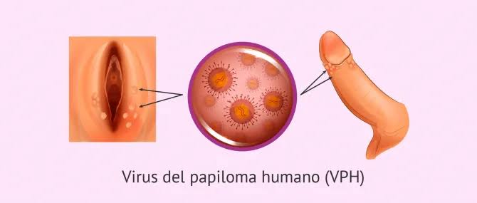
Las infecciones de transmisión sexual (ITS) son infecciones causadas por virus, bacterias o parásitos que pueden transmitirse principalmente mediante el contacto sexual.
Algunas pueden presentarse sin síntomas, por lo que una persona podría tener una infección sin saberlo. Por eso, es importante informarse, conocer las formas de prevención y acudir a un centro de salud cuando sea necesario.
Conocer estas infecciones nos ayuda a tomar decisiones responsables, cuidar nuestra salud y evitar prejuicios hacia las personas que viven con alguna de ellas.
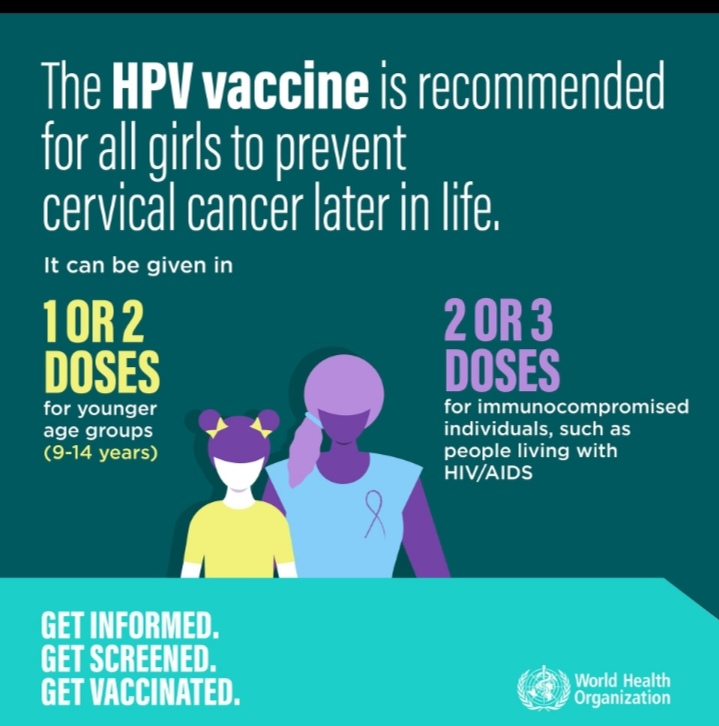
El Virus del Papiloma Humano, conocido como VPH, es un grupo de virus muy comunes que pueden afectar la piel y las mucosas. Existen diferentes tipos: algunos pueden producir verrugas y otros pueden ocasionar cambios celulares que, con el tiempo, pueden convertirse en determinados tipos de cáncer.
Se transmite principalmente mediante el contacto íntimo de piel con piel durante el contacto sexual. Una persona puede transmitirlo incluso cuando no presenta señales visibles de infección.
Muchas infecciones por VPH no producen síntomas y el organismo puede eliminarlas por sí solo. Algunos tipos pueden causar verrugas, mientras que otros pueden provocar cambios celulares que necesitan seguimiento médico.
Un dato importante: la vacuna contra el VPH ayuda a prevenir infecciones por los tipos del virus que pueden causar varios cánceres y verrugas. No sustituye los controles médicos recomendados.
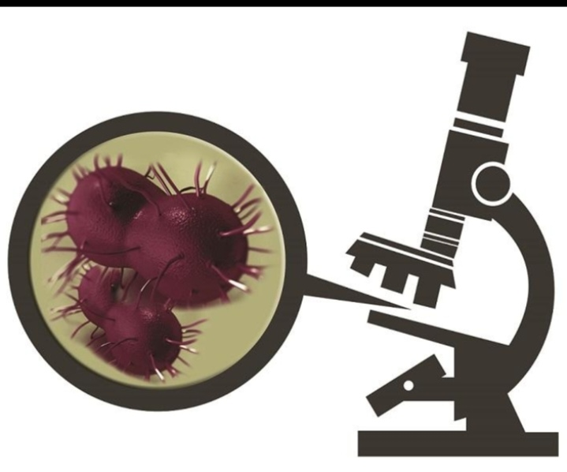
La clamidia y la gonorrea son infecciones de transmisión sexual causadas por bacterias. Ambas pueden afectar a mujeres y varones y, en muchos casos, no presentan síntomas al principio. Por esta razón, una persona puede tenerlas sin darse cuenta.
Se transmiten principalmente mediante el contacto sexual. También pueden pasar de una madre infectada a su bebé durante el parto.
Cuando producen síntomas, pueden presentarse secreciones diferentes de lo habitual, molestias al orinar o dolor en la parte baja del abdomen. Sin embargo, estas señales no siempre aparecen y no permiten confirmar por sí solas una infección.
Sí. La clamidia y la gonorrea pueden tratarse con antibióticos indicados por profesionales de salud. Es importante completar el tratamiento prescrito y seguir las recomendaciones médicas.
No se deben utilizar antibióticos por cuenta propia, porque un tratamiento incorrecto puede dificultar la curación y favorecer la resistencia bacteriana.
Un consejo para ti: no esperes a tener síntomas para consultar si existe una preocupación. La detección y el tratamiento oportunos ayudan a evitar complicaciones.
La sífilis es una infección de transmisión sexual causada por una bacteria llamada Treponema pallidum. Puede afectar diferentes partes del organismo y avanzar por etapas si no recibe tratamiento.
Se transmite principalmente mediante el contacto directo con lesiones infecciosas durante el contacto sexual. También puede transmitirse de una madre infectada a su bebé durante el embarazo.
En una etapa inicial puede aparecer una lesión que generalmente no causa dolor. En otras etapas pueden presentarse manchas en la piel, incluso en las palmas de las manos o las plantas de los pies, y otros síntomas. En ocasiones, las señales desaparecen, pero eso no significa que la infección se haya curado.
Sí. La sífilis puede curarse con antibióticos indicados por un profesional de salud. La atención temprana es importante para evitar complicaciones.
Un dato importante: aunque algunas manifestaciones desaparezcan, la infección puede continuar en el organismo. Por eso, es fundamental realizarse las pruebas y recibir el tratamiento adecuado.
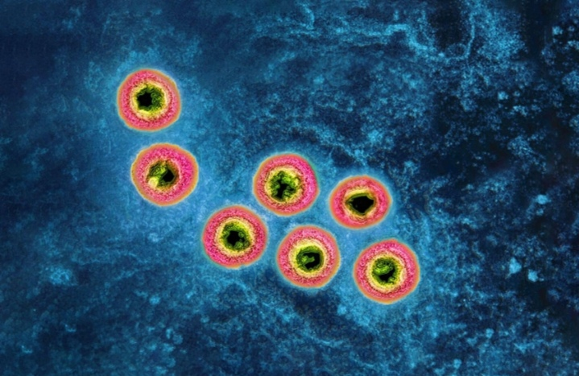
El herpes genital es una infección causada por el virus del herpes simple. Puede permanecer en el organismo durante mucho tiempo y presentar episodios en los que aparecen molestias o lesiones en la zona genital.
Se transmite principalmente mediante el contacto directo de piel o mucosas con una zona infectada. Puede transmitirse incluso cuando no hay lesiones visibles.
Algunas personas no presentan síntomas. Otras pueden experimentar pequeñas ampollas o úlceras dolorosas, picazón, ardor o molestias. Estas señales pueden reaparecer después de un tiempo.
Actualmente no existe un tratamiento que elimine por completo el virus del organismo. Sin embargo, existen medicamentos antivirales que ayudan a controlar los episodios, disminuir las molestias y reducir el riesgo de transmisión.
Recuerda: el herpes genital es una condición de salud, no una razón para discriminar o juzgar a una persona. La orientación médica permite recibir información y atención adecuada.
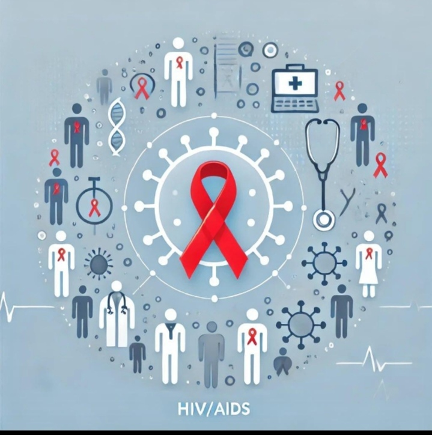
El VIH es un virus que afecta al sistema inmunitario, encargado de defender al organismo frente a diferentes infecciones. Si no recibe tratamiento, puede debilitar progresivamente las defensas del cuerpo.
El VIH puede transmitirse mediante determinados fluidos corporales de una persona que tiene el virus, principalmente durante el contacto sexual sin protección, por el contacto con sangre infectada o de madre a hijo durante el embarazo, el parto o la lactancia.
El VIH no se transmite por abrazar, saludar, compartir alimentos, utilizar los mismos baños, conversar o convivir con una persona que tiene el virus. Tampoco se transmite por picaduras de mosquitos.
Algunas personas pueden presentar síntomas parecidos a los de una gripe durante las primeras semanas, mientras que otras no presentan señales. La única manera de conocer el estado serológico es mediante una prueba de detección.
Sí. El tratamiento antirretroviral permite controlar el VIH y reducir la cantidad de virus en el organismo. Con atención médica continua, las personas con VIH pueden llevar una vida larga y saludable.
Cuando el tratamiento consigue mantener la carga viral indetectable, el VIH no se transmite por vía sexual. Esto se conoce como Indetectable = Intransmisible (I=I).
Un mensaje importante: una persona con VIH merece respeto, apoyo y las mismas oportunidades que cualquier otra. La desinformación y la discriminación pueden causar más daño que la propia falta de conocimiento.
Conocer las infecciones de transmisión sexual nos permite comprender la importancia de la prevención, los controles médicos y el cuidado de nuestra salud. No debemos sentir vergüenza al realizar preguntas o buscar orientación.
Recuerda que ninguna infección define el valor de una persona. La educación, el respeto y la atención oportuna son fundamentales para construir una sociedad más informada y libre de prejuicios.
Las emociones forman parte de nuestra vida y aparecen en diferentes momentos: cuando estamos felices, preocupados, tristes, enojados o sentimos miedo. Cada emoción tiene una razón de ser y nos ayuda a comprender cómo nos sentimos frente a las situaciones que vivimos.
El control emocional consiste en reconocer, comprender y aprender a manejar nuestras emociones de una manera saludable. No significa ocultar lo que sentimos ni evitar estar tristes o enojados, sino encontrar formas adecuadas de expresar esos sentimientos sin lastimarnos ni lastimar a otras personas.
Aprender a manejar las emociones nos ayuda a enfrentar los problemas con mayor tranquilidad, tomar mejores decisiones, resolver desacuerdos y comprender lo que sienten los demás. También permite conocernos mejor y fortalecer nuestra confianza.
Imagina que recibes una calificación que no esperabas. Es normal sentir frustración o tristeza. En lugar de reaccionar impulsivamente, puedes reconocer lo que sientes, pensar qué puedes mejorar y pedir orientación si la necesitas.
Un consejo para ti: no tienes que sentirte bien todo el tiempo. Aprender a reconocer tus emociones también es una forma de cuidar tu bienestar.
La comunicación es una parte fundamental de nuestras relaciones con otras personas. Nos permite compartir ideas, expresar sentimientos, transmitir necesidades y comprender diferentes puntos de vista.
Comunicarnos correctamente no significa solamente hablar, también implica saber escuchar, prestar atención y respetar lo que los demás desean expresar. Una buena comunicación ayuda a evitar malentendidos y permite resolver los problemas mediante el diálogo.
Es la capacidad de expresar lo que pensamos, sentimos o necesitamos de manera clara, sincera y respetuosa, sin imponer nuestras ideas ni permitir que otras personas pasen por encima de nuestros derechos.
Escuchar es tan importante como hablar. Cuando prestamos atención a otra persona, demostramos interés y le hacemos sentir que su opinión es importante. No siempre tenemos que estar de acuerdo, pero sí podemos aprender a respetar diferentes maneras de pensar.
Un consejo para ti: expresa lo que piensas sin miedo, pero recuerda que tus palabras también pueden influir en cómo se sienten los demás.
A lo largo de nuestra vida establecemos relaciones con familiares, compañeros, amistades y otras personas. Estos vínculos pueden influir en nuestra manera de pensar, sentir y desenvolvernos en la sociedad.
Una relación saludable es aquella en la que existe respeto, confianza, comunicación y apoyo mutuo. Nos permite sentirnos escuchados, valorados y libres de expresar nuestra personalidad sin miedo a recibir humillaciones, amenazas o malos tratos.
Es importante prestar atención cuando una persona intenta controlarnos, nos humilla, nos amenaza, nos aleja de nuestros seres queridos o nos presiona para hacer algo que no queremos. Estas conductas no son muestras de cariño ni de respeto.
Si vivimos una situación que nos hace sentir incómodos, tenemos derecho a establecer límites y buscar ayuda de una persona adulta de confianza.
Las relaciones saludables se construyen día a día mediante pequeños actos: escuchar, respetar, cumplir nuestra palabra, reconocer los errores y comprender que cada persona merece ser tratada con dignidad.
Un consejo para ti: rodéate de personas con quienes puedas ser tú mismo, expresar tus ideas y sentirte respetado. Tú también puedes ofrecer ese mismo respeto a los demás.
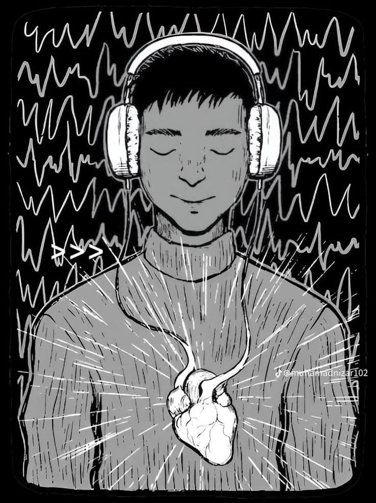
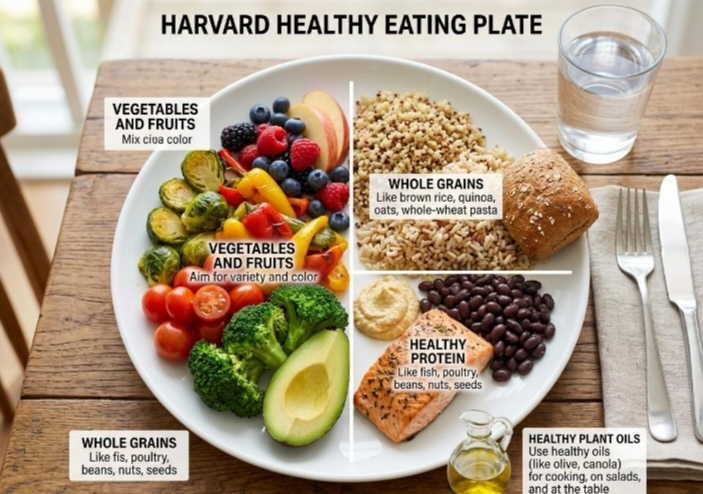
Alimentarnos bien es uno de los hábitos más importantes para mantener nuestro bienestar. Los alimentos nos proporcionan la energía y los nutrientes que necesitamos para estudiar, realizar nuestras actividades y mantener el organismo en funcionamiento.
Una alimentación saludable no consiste en comer siempre lo mismo ni en prohibirse determinados alimentos. Se trata de aprender a elegir diferentes opciones que aporten nutrientes y permitan mantener una alimentación variada y equilibrada.
El desayuno puede ayudarnos a comenzar el día con energía y aportar nutrientes importantes. Una buena opción puede incluir leche o yogur, frutas, pan, avena o huevos, según los alimentos disponibles y las necesidades de cada persona.
Un consejo para ti: cuidar tu alimentación comienza con pequeños hábitos cotidianos. No necesitas hacerlo todo perfecto, lo importante es aprender a cuidar tu cuerpo con variedad y equilibrio.
Leer es una actividad que nos permite descubrir nuevos mundos, conocer diferentes historias y aprender sobre temas que despiertan nuestra curiosidad. A través de la lectura podemos viajar con la imaginación, comprender otras realidades y ampliar nuestra manera de ver el mundo.
Además de entretenernos, leer contribuye al desarrollo del vocabulario, la comprensión lectora, la concentración y la capacidad de expresar nuestras ideas. También nos ayuda a desarrollar el pensamiento crítico y a mejorar nuestro aprendizaje dentro y fuera del colegio.
No es necesario comenzar leyendo libros muy extensos. Puedes elegir cuentos, novelas, historietas, revistas o temas que realmente te interesen. Dedicar unos minutos al día a la lectura puede ser un buen comienzo.
También puedes buscar un lugar tranquilo, establecer un horario y compartir con otras personas aquello que has leído. Lo importante es encontrar lecturas que despierten tu interés y hagan de este momento una experiencia agradable.
Un consejo para ti: cada página que lees puede enseñarte algo nuevo. No leas solamente por obligación; descubre temas que disfrutes y permite que tu curiosidad te lleve a aprender.
La música forma parte de nuestra vida cotidiana. Está presente en diferentes momentos: cuando estudiamos, descansamos, compartimos con amigos o simplemente queremos disfrutar de una canción que nos gusta.
Escuchar música puede convertirse en una actividad recreativa que nos ayude a expresar emociones, recordar experiencias y disfrutar de momentos de tranquilidad. Algunas canciones pueden transmitir alegría, otras acompañarnos en momentos difíciles o ayudarnos a concentrarnos, dependiendo de cada persona y de la actividad que esté realizando.
Es importante escuchar música a un volumen moderado, especialmente cuando utilizamos audífonos. También conviene tomar descansos y mantener la atención en nuestro entorno cuando caminamos o realizamos actividades que requieren concentración.
Puedes crear una lista de canciones para diferentes momentos: música tranquila para descansar, canciones alegres para disfrutar tu tiempo libre o melodías instrumentales para acompañar algunas actividades de estudio.
Un consejo para ti: permite que la música sea parte de tus momentos especiales. Elige canciones que disfrutes y recuerda cuidar tu audición mientras las escuchas.